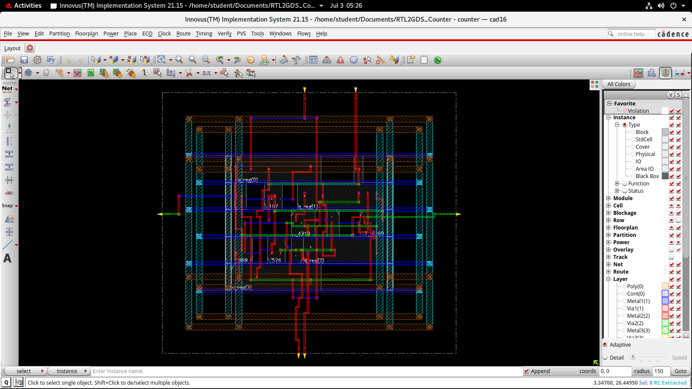
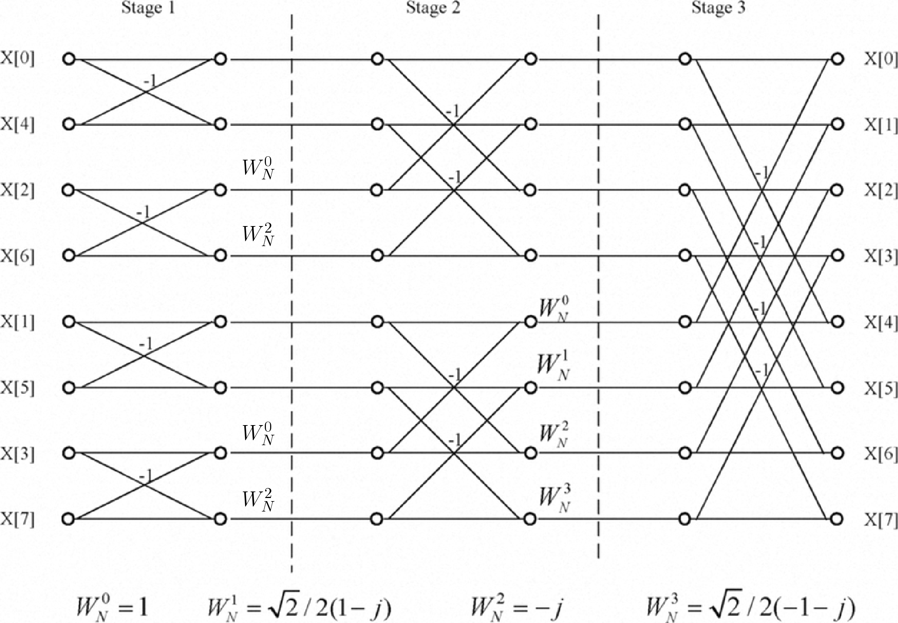

The AHB and APB are two different bus protocols commonly used in SoC designs. The AHB is a high-performance bus protocol that is typically used for connecting high-speed components like processors, memory controllers, and DMA controllers. On the other hand, the APB is a lower-performance bus protocol used for connecting slower peripherals like timers, UARTs, and I/O controllers.
The AHB to APB bridge acts as an interface between the AHB and APB buses allowing the AHB master to access and control APB peripherals.
Designed and implemented the AHB to APB bridge using Xilinx Vivado.
Developed Verilog code for various modules of the bridge:
- AHB master
- AHB slave
- APB FSM Controller
- APB slave
Wrote Verilog testbench for verifying the functionality for:
- single-read
- single-write
- burst-read
- burst-write

RTL (Register Transfer Level) to GDSII (Graphic Data System version II) is a multi-step process involved in designing and manufacturing integrated circuits (ICs). The RTL represents the design description at the register transfer level, which captures the behavior and functionality of the circuit. GDSII, on the other hand, is a file format used to represent the physical layout of the IC.
Designed and implemented Johnson Counter from using Cadence tools.
Counter was designed using verilog, Incisive was used for functional simulation, Genus was used for synthesis of the design and Innovus was used for floor planning, power planning, routing, timing and GDSII file extraction.
Image compression using 2D-DCT is a technique for reducing the size of images while preserving their quality.
The algorithm for Image Compression was implemented in MATLAB. The algorithm allows for different levels of compression using Q-factor.
For a Q-factor of 50, compression of 96.22% was achieved for standard Lena image.

Analog multiplier circuit takes two analog signals as input and produces an output which is their product.
Designed the circuit using NI Multisim.
The circuit consisted of:
• Logarithmic amplifiers
• antilogarithmic amplifiers
• summing amplifiers

Huffman encoding is a lossless data compression technique used to reduce the size of data by assigning variable-length codes to different symbols based on their frequency of occurrence. Huffman encoding algorithm was implemented in MATLAB.

Decimation in Time (DIT) Radix 2 FFT algorithm converts the time domain N
point sequence x(n) to a frequency domain N-point sequence X(k).In Decimation in
Time algorithm the time domain sequence x(n) is decimated and smaller point DFT are
performed. The results of smaller point DFTs are combined to get the result of N-point
DFT.